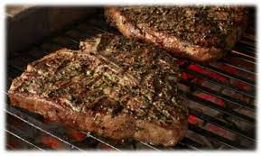

Matts New York strip steak

This is my favorite steak to make for the family.
it is sweet but still has the "steak flavor" Below I will
list the ingredients to make this steak
Ingredients
- 2 lbs new york strip steaks
- Taryaki Sauce
- Soy Sauce
- Brown Sugar
- Onion Powder
- Garlic Salt
- Peprika
- Garlic powder
Steps
- * Pour 4tbsp of Taryaki and Soy Sauce into a mixing bowl
- * Add 2 tbsp of brown sugar
- * Add 1 tbsp of Garlic (salt / powder) / Onion Powder & Peprika
- * Mix well and let steak sit in for 5 minutes on each side
- * Cook on stove with oil until doneness of choice is reached
- * Enjoy